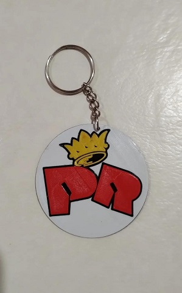
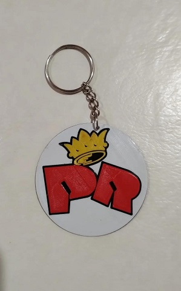

Imprimimos todo tipo de modelos 3D, en diferentes tipos de materiales, tanto PLA, ABS y hasta Nylon 6 o 12. Ya sea a partir de un archivo generado en algún software de diseño, contamos con departamento de diseño a partir de planos o escaneo 3D, y también realizamos impresiones de modelos descargados de internet.
En primer lugar se debe contar con un archivo .stl, este tipo es el que interpreta el programa encargado de configurar las caracteristicas de la impresión a realizar, o mejor conocido como Laminador(Cura, PrusaSlicer).
Las configuraciones pueden ser altura de capa, ancho de la misma, etc, y dependen de las especificaciones y requerimientos del pedido de impresión.
El laminador genera un archivo .gcode , el cual es el encargado de decirle a la impresora 3D como moverse, a que velocidad, en que dirección, con que fuerza, etc.
Este archivo se puede crear utilizando programas de diseño 3D (Autocad, Fusion 360).
Una vez obtenido el archivo gcode, se procede a preparar la máquina con el color de filamento a utilzar y se ejecuta el programa.
Luego de que termine la impresión, hay que retirar la misma de la placa de adhesión y luego se pasa a la etapa de postprocesado, donde se utilizan lijas, resinas y utencillios para mejorar la calidad de impresión.
Personaliza tus grinders, podes encontrarlos con o sin dientes, y de 2 o 3 secciones, ademas de dedicarlos con nombre¡¡


Nuestros llaveros pueden contar con hasta 3 colores diferentes, con estilo de letras totalmente personalizados.
 

Contamos con mates personalizados de diferentes personajes animados, tambien con bustos de famosos y entre otros modelos pueden encontrar con forma de camiones, autos y tambien de diferentes clubes.


Realizamos planos de piezas mecanicas, y tambien de obras incluyendo los planos de las diferentes energias a utilizar.

Trabajamos con mates personalizados de diferentes personajes animados, tambien con bustos de famosos y entre otros modelos pueden encontrar con forma de camiones, autos y tambien de diferentes clubes.

Contamos con escaners 3d semi-profesionales para poder llevar a cabo el modelado en tres dimensiones de tus piezas, figuras y hasta personas¡¡.